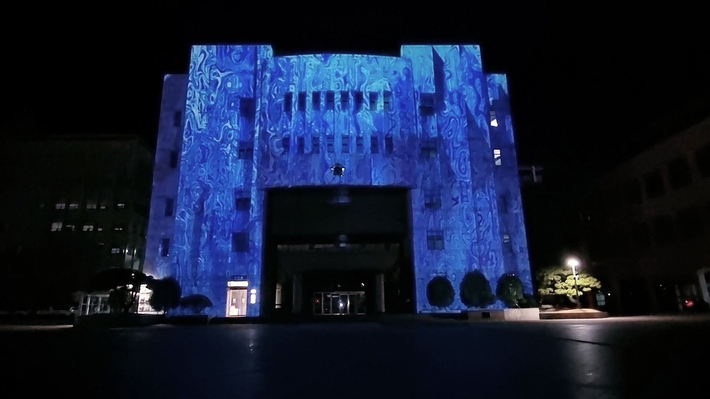
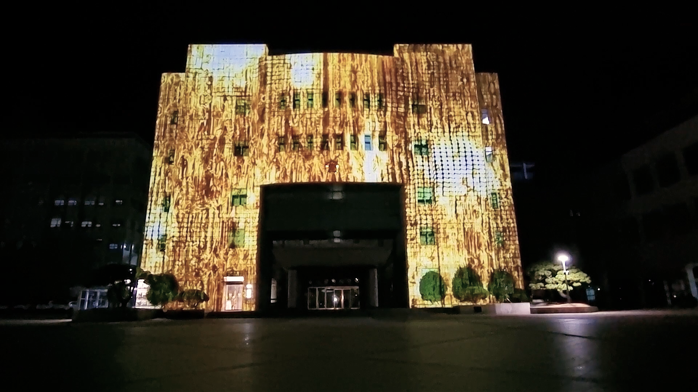
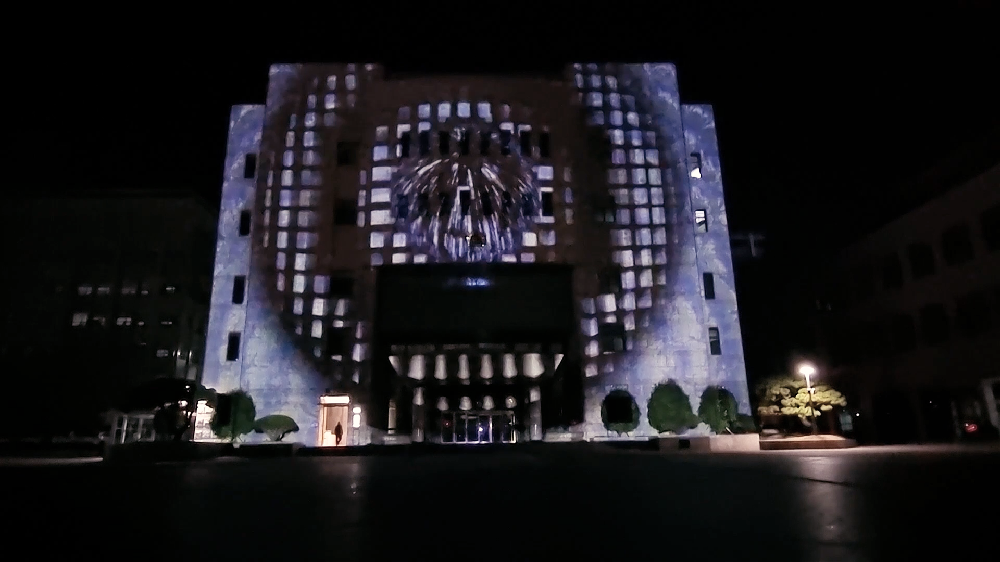
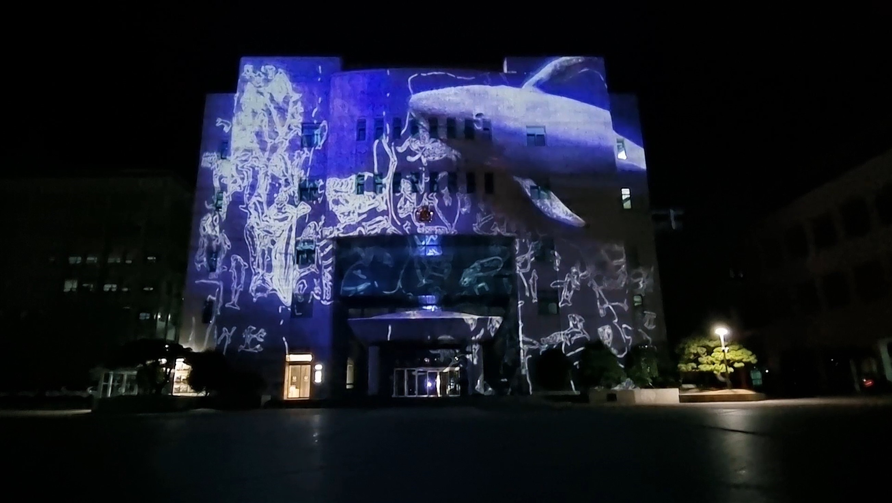
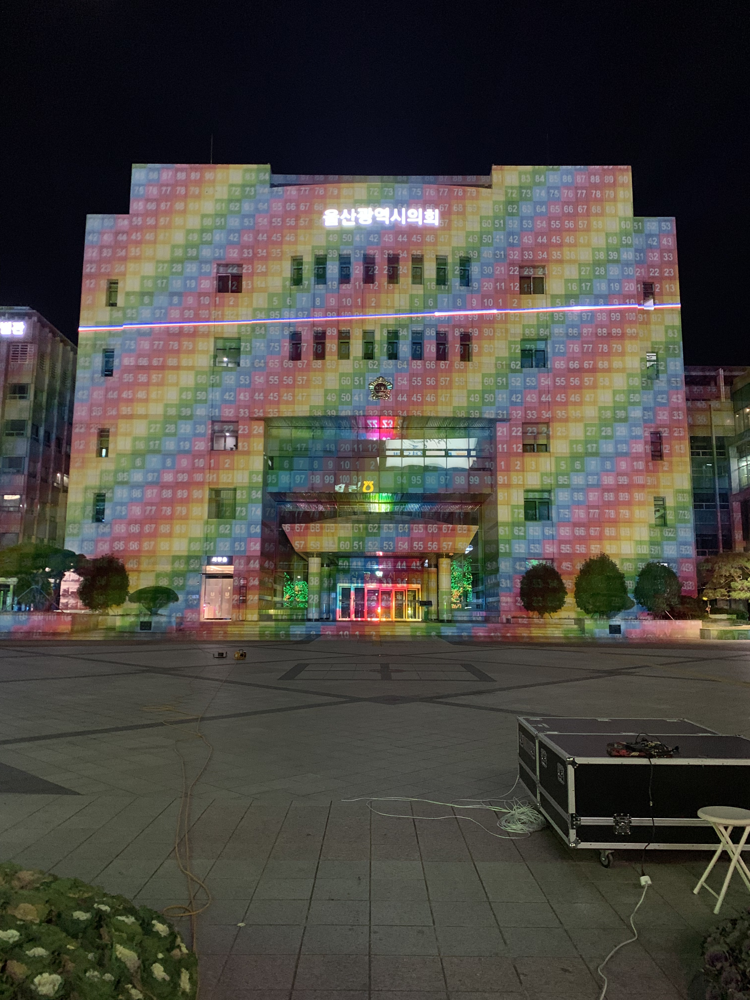
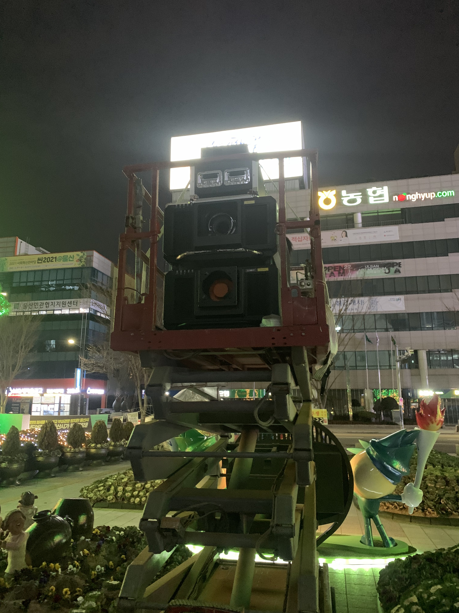
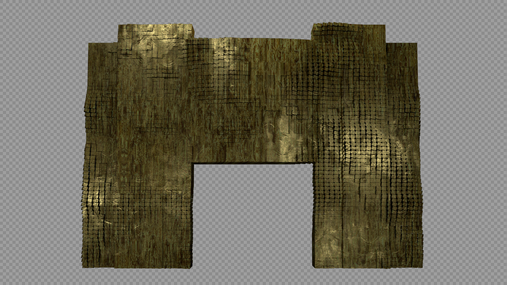
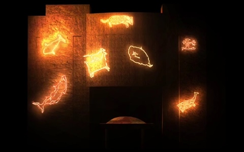
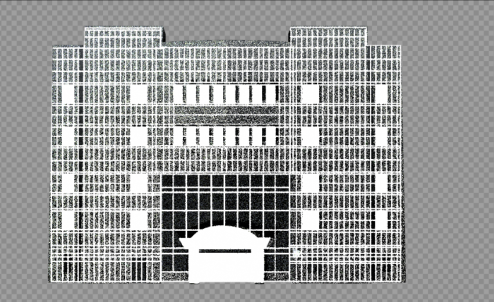
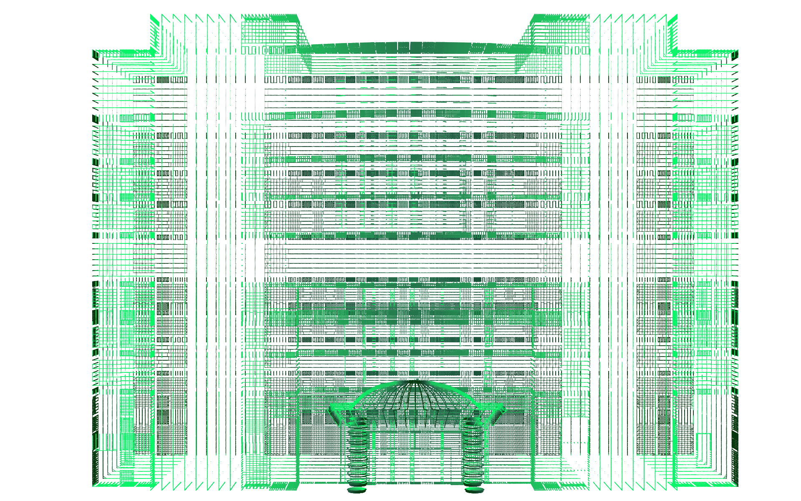

01
Site Analysis & Field Research
“공간의 조건과 맥락을 읽는 단계”
현장 공간의 구조, 빛 환경, 동선, 제약 조건 분석

울산광역시의회
2021
울산광역시의회
INTEGRATED PROCESS
Lightchaser는 공간 설계부터 구현까지 전 과정을 책임지며, 콘텐츠와 기술이 분리되지 않는 미디어 파사드를 만듭니다.




“공간의 조건과 맥락을 읽는 단계”
현장 공간의 구조, 빛 환경, 동선, 제약 조건 분석
“파사드 기술 구조를 설계하는 단계”
하드웨어 : 30,000 ansi 프로젝터 2대, 레이저 1대
투사방식 : 장면 2대 프로젝터 스태킹 투사


WORK OVERVIEW
본 작업은 울산 반구대 암각화 50주년을 맞아 ‘암각화와 신성한 공간’이라는 주제를 통해 흔적과 망각, 학습과 재발견이 반복되는 시간의 구조를 조명한다. 암각화는 고정된 과거의 이미지가 아니라, 지워지고 다시 드러나는 과정 속에서 인간이 무엇을 기억하고 무엇을 잊는지 보여주는 매개다.
자연의 풍화와 시대의 조건 속에서 흔적은 사라지거나 겹쳐지며 새로운 층위를 만든다. 우리는 그 과정에서 망각을 겪지만, 동시에 그 망각 위에서 다시 의미를 구성한다. 이 작업은 기억이 축적만이 아니라 부재와 재해석을 포함한 운동이라는 점에 주목한다.
여기서 ‘신성한 공간’은 종교적 상징이 아니라, 감각과 태도를 바꾸는 장소의 힘이다. 반구대의 바위면은 한 번에 완결되는 화면이 아니라, 서로 다른 시간의 흔적들이 교차하는 경계이며, 관객은 무엇을 보았는지와 동시에 무엇을 놓쳤는지를 자각하게 된다. 작품은 이러한 경험을 통해, 감정과 시대의 흔적 또한 지워짐과 재등장의 반복 속에서만 형태를 갖는다는 ‘본질의 아이러니’를 제안한다.
“공간 구조를 활용해 콘텐츠를 구현하는 단계”
- 공간의 구조와 면 분할을 고려한 모션 제작
- 사운드 기획 및 제작




유환, 김문정
에이플랜컴퍼니